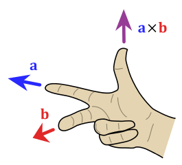

SVCDE Week 1 – Vectors & Vector Functions
1.1 Basic properties
The magnitude of a vector $\vec{x} = \Vector{x_1 \\ x_2 \\ .. \\ x_n} \in \mathbb{R}^n$ is
$$|\vec{x}| = \sqrt{\sum_{k=1}^n x_k^2}$$
Geometrically, this represents the distance to the vector’s tip from the origin and follows from generalised Pythagoras'.
The unit vector $\hat{x}$ is the vector pointing in the direction of $\vec{x} \in \mathbb{R}^n$ of magnitude 1. So,
$$\hat{x} = \frac{1}{|\vec{x}|}\vec{x}.$$
1.2 The dot product
Let’s think about a very general $\vec{x}\cdot \vec{y}$, where $\vec{x}, \vec{y} \in \mathbb{R}^n$. We are taught two different ways (or, more precisely, two different definitions) for how to go about computing this dot product:
1. Algebraic
$$\vec{x} \cdot \vec{y} = \Vector{x_1 \\ .. \\ x_n} \cdot \Vector{y_1 \\ .. \\ y_n} = \sum_{k=1}^n x_ky_k$$
Which is a pretty straight-forward and extremely convenient entry-wise sum of products. Or:
2. Geometric
$$\vec{x} \cdot \vec{y} = |\vec{x}||\vec{y}|\cos{\angle(\vec{x}, \vec{y})}$$
Which corresponds to the product of the length of the the projection of $\vec{x}$ onto $\vec{y}$ and the length of $\vec{y}$, or vice-versa.
But how do these relate?
We are often reassured that these two methods of thought are identical. But the correspondence is not very obvious, and (in my opinion) constitutes a pretty glaring gap. So here’s a sketch of the proof! Helps intuition.
Sketch
First, rewrite our vectors in terms of an orthogonal basis. The simplest would of course be the good ol' standard basis $\{\vec{e_i} \mid i \in \{1, 2, …, n\}\}$. Then, $\vec{x} = \sum_{i=1}^nx_i\vec{e}_i$ and $\vec{y} = \sum_{i=1}^ny_i\vec{e}_i$.
We will use the geometric definition and show that it is equivalent to the algebraic one.
Therefore, note that $\vec{e}_i \cdot \vec{e}_j = \delta_{i,j}$, where $\delta$ is the kronecker delta, since the standard basis is composed of pair-wise orthogonal unit vectors (think about how this makes sense given the projection definition illustrated earlier!).
Now everything becomes crystal clear. Rewrite $\vec{x}$ and $\vec{y}$ in terms of their sum-of-basis forms, and expand the multiplication. Note that the dot product can be shown to be both linear and associative using its geometric definition. Hence,
\begin{align}
\vec{x}\cdot\vec{y} &= \bigg(\sum_{i=1}^n x_i\vec{e}_i\bigg)\cdot\bigg(\sum_{i=1}^ny_i\vec{e}_i\bigg) \\
&= \sum_{1\leq i, j \leq n} x_iy_j(\vec{e}_i\cdot\vec{e}_j) \\
&= \sum_{1 \leq i, j \leq n} x_iy_j\delta_{i, j} \\
&= \sum_{1 \leq i \leq n} x_iy_i \\
\end{align}
And done! Equivalence.
The cross product
The cross product of some arbitrary $\mathbb{R}^n$ vectors $\vec{x}$ and $\vec{y}$ constructs a vector with the following convenient properties:
- it is orthogonal to both $\vec{x}$ and $\vec{y}$
- its magnitude is equal to the parallelogram formed by $\vec{x}$ and $\vec{y}$ (note that this means the cross product is $\vec{0}$ if $\vec{x} \mid\mid \vec{y}$)
- its direction is defined by the right-hand rule:

Note: from property 2., we can see that the cross product is also a measure of the “orthogonality” of $\vec{x}$ and $\vec{y}$. The more orthogonal they are, the higher the magnitude of $\vec{x}\times\vec{y}$ will be.
Nice, so we can take two vectors spanning a two-dimensional plane ($\mathbb{R}^2$) and find a third with which to span $\mathbb{R}^3$! So how do we actually efficiently compute the cross product?
The algebraic formula
$$\vec{x}\times\vec{y} = \Vector{x_1 \\ x_2 \\ x_3}\times \Vector{y_1 \\ y_2 \\ y_3} =
\begin{vmatrix}
\vec{i} & \vec{j} & \vec{k} \\
x_1 & x_2 & x_3 \\
y_1 & y_2 & y_3 \\
\end{vmatrix}.
$$
Wow, that’s suspiciously simple. So why does this work? Well, once we prove that the cross product is anti-commutative and linear, we can do a similar proof to the one sketched for the geometric-algebraic correspondence of the dot product. The final form will look like $$|(x_2y_3 - x_3y_2)\vec{i} + (x_3y_1 - x_1y_3)\vec{j} + (x_1y_2 - x_2y_1)\vec{k}|$$
Which the given derivative just so happens to equal, after expanding along the first row. So yes, the beautiful derivative is in fact just a neat artithmetic trick!
For further discussion about understanding the algebraic properties of dot and cross products (e.g. their linearity) please consult this amazing introductory article by T. Dray and C. A. Manogue form the Journal of Online Mathematics.
A couple tricks (properties) involving the dot and the cross products
Let $\vec{x}, \vec{y}, \vec{z} \in \mathbb{R}^3$. Then,
$$\vec{x}\cdot(\vec{y}\times\vec{z}) = (\vec{x}\times\vec{y})\cdot\vec{z}$$
Both represent the volume of the parallelepiped specified by $(\vec{x}, \vec{y}, \vec{z})$.
Moreover,
$$\vec{x}\times(\vec{y}\cdot\vec{z}) = (\vec{x}\cdot\vec{z})\vec{y} - (\vec{x}\cdot\vec{y})\vec{z} $$
The explaination for this one is left as an exercise for the reader. :^)
1.2 - 1.6 Generalisations
The limit laws, derivative laws, and integration laws apply to vector functions all the same as with single-variable functions, since they all distribute entry-wise.
Note: A vector function with a constant magnitude has a derivative with which it is orthogonal. This is because it moves along the surface of a sphere, the tangent to which is always perpendicular to it.
1.7 Arc length
The arc length of a plane curve defined by the position vector $\vec{r}(t)$ over the interval $t \in [a, b]$ is:
$$L = \int_{a}^b |\vec{r}(t)|\,dt$$
This gives rise to the arc length function
$$s(t) = \int_{0}^t |\vec{r}(u)|\,du$$
Note that this maps vectors to scalars ($\mathbb{R}^n \rightarrow \mathbb{R}$)!!!
Next, by the Fundamental Theorem of Calculus,
$$s'(t) = |\vec{r}(t)|$$
Pretty neat, huh?
1.8 Curvature
The unit tangent vector
The unit tangent vector for a curve traced out by the position vector $\vec{r}(t)$ is defined as:
$$\vec{T}'(t) = \frac{\vec{r}'(t)}{|\vec{r}'(t)|}$$
It represents the vector of magnitude 1 that points in the direction that the curve is moving.
Smoothness
A parametrisation is smooth on an interval $I$ if $\vec{v}'(t)$ is continous on $I$ and $\forall t \in I : \vec{v}'(t) \neq \vec{0}$.
Therefore, we call a curve smooth if it has a smooth parametrisation.
The curvature of a smooth curve at $t$ is defined as:
$$\mathcal{K}(t) = \bigg|\frac{\vec{T}'(t)}{\vec{s}'(t)}\bigg|$$
In other words, how quickly the curve changes direction as $t$ increases. This is equivalent to:
$$\mathcal{K}(t) = \frac{|\vec{T}'(t)|}{|\vec{r}'(t)|} = \frac{|\vec{r}'(t)\times\vec{r}''(t)|}{|\vec{r}'(t)|^3}.$$
This can be proven through some basic vector algebra and calculus. Refer to the lecture notes for the proof.
1.9 Normal and binormal vectors
As mentioned previously, all constant magnitude curves (living on a sphere) are orthogonal to their unit tangent vectors.
Let $\vec{r}(t)$ be smooth. We know that it therefore must have a unit tangent vector $\vec{T}(t) = \frac{\vec{r}'(t)}{|\vec{r}'(t)|}$ of magnitude 1 which, by the above, is orthogonal to its derivative $\vec{T}'(t)$. In other words,
$$\forall t : \vec{T}(t) \cdot \vec{T}'(t) = \vec{0}.$$
Note however that unlike $\vec{T}(t)$, $\vec{T}'(t)$ might not necessarily always be of magnitude 1. This gives rise to the need of a new vector, the principal unit normal vector $\vec{N}(t)$:
$$\vec{N}(t) = \frac{\vec{T}'(t)}{|\vec{T}'(t)|}.$$
So we have now have two unit vectors $\vec{T}(t)$ and $\vec{N}(t)$ which are orthogonal for any value of $t$. To complete the $\mathbb{R}^3$ basis, we define the binormal vector $\vec{B}(t)$:
$$\vec{B}(t) = \vec{T}(t)\times\vec{N}(t).$$
And there you go! For any $t \in I$,
$$\{\vec{T}(t), \vec{N}(t), \vec{B}(t)\}$$
form a standard basis for $\mathbb{R}^3$.